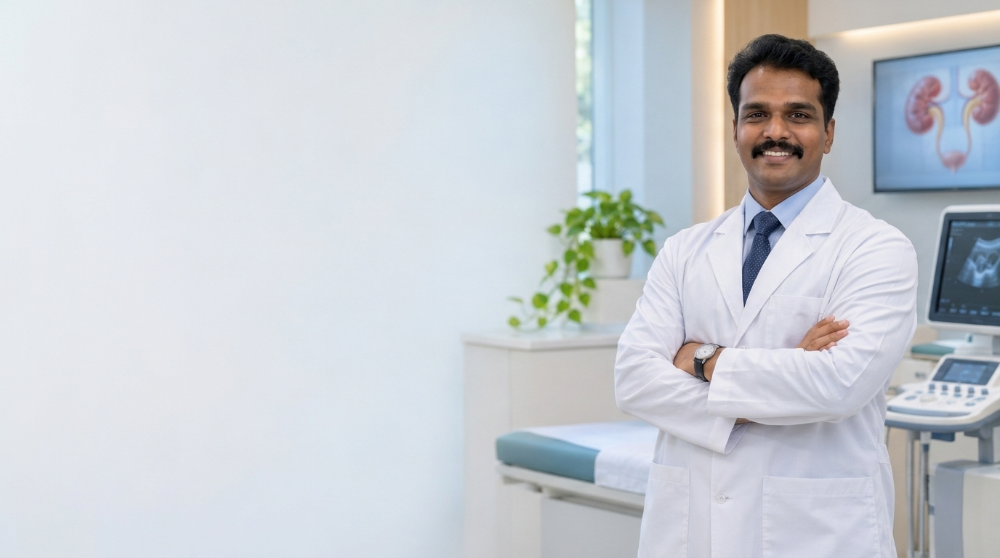
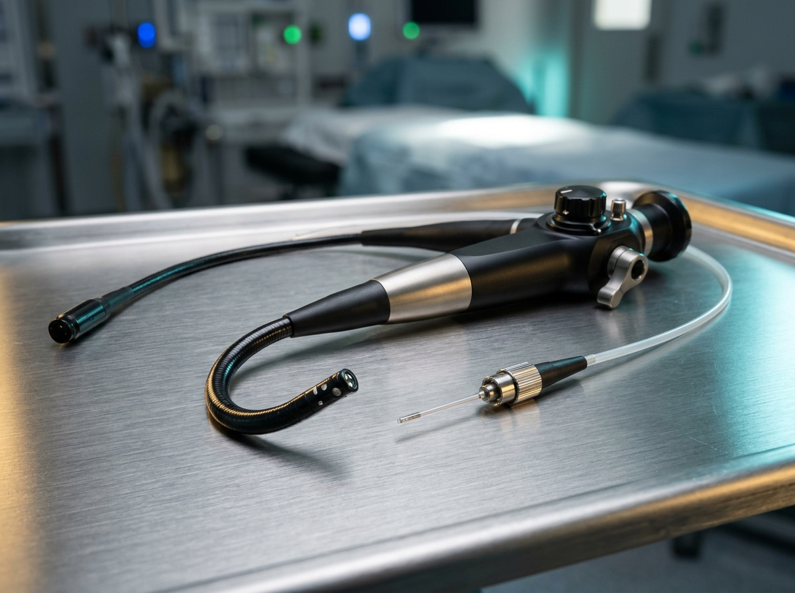
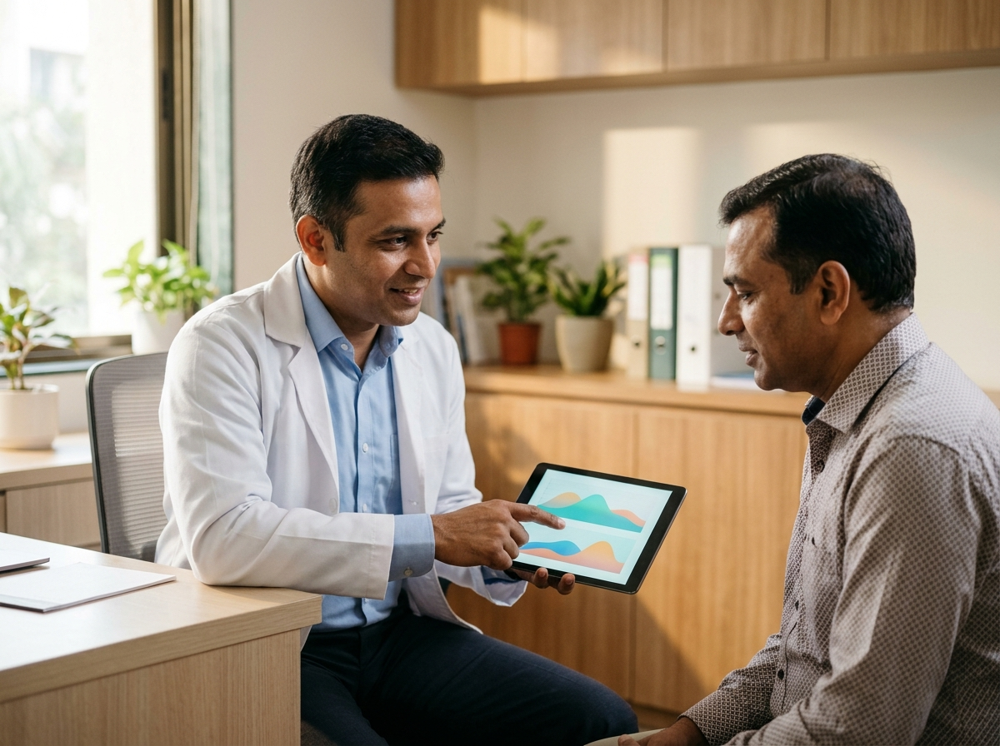
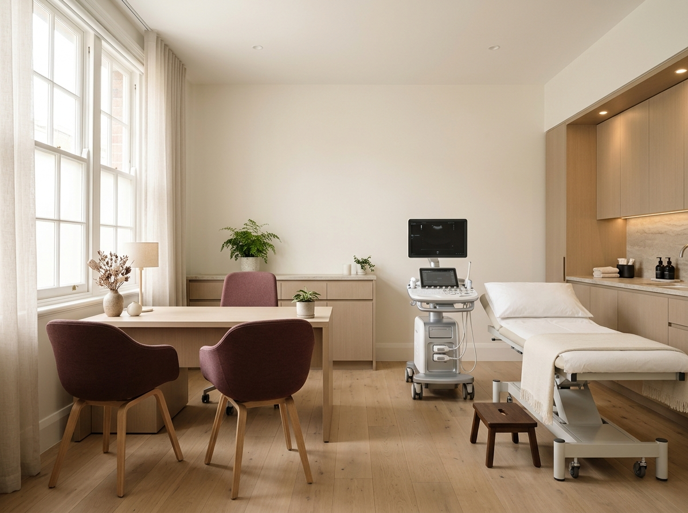
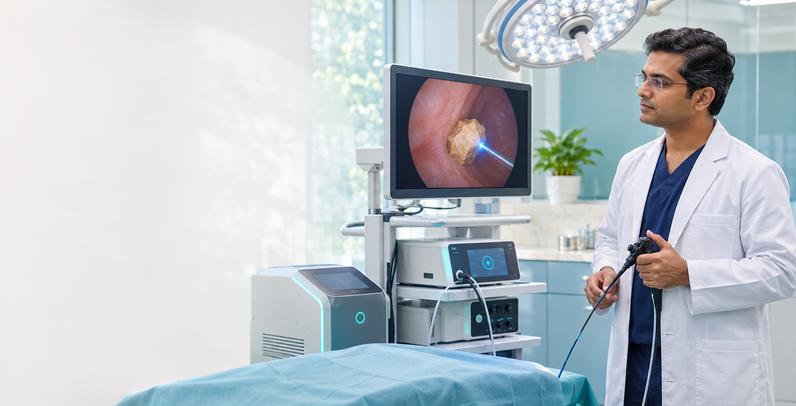
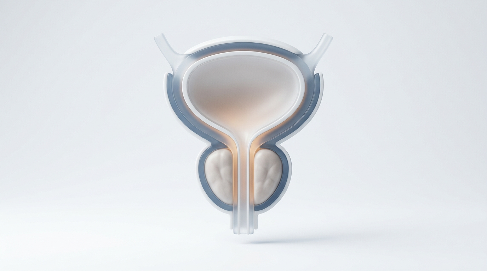

Expert Medical Care
View Full Credentials
Lead Specialist
Dr. S. Vijay Ganapathy
MS (JIPMER), DNB (Surgery), MCh (Urology) — Gold Medalist, Consultant Urologist & Andrologist.
Clinic Location
Get Directions & Map
Consultation Address
Dr. VG Kidney Stone Clinic
#14B, First Cross Street, Perumal Raja Garden, Reddiyarapalayam, Puducherry – 605010.
Contact & Clinic Timings
Reserve Your Slot
Consultation Hours
Mon – Fri: 6:00 PM – 9:00 PM
Sat & Sun: By Appointment Only
Call: 9444469179 · 9444469194
Patient-Centered Excellence
We Are Always Ready to Help You & Your Family
Dedicated to providing timely, compassionate, and evidence-based urological care—from acute renal colic relief to comprehensive long-term recovery.
Emergency Assistance
Immediate medical evaluation for severe kidney stone pain, urinary retention, or acute urological emergencies with rapid diagnostic triage.
In-Clinic Pharmacy & Diagnostics
Convenient access to prescribed urological medications, urine diagnostics, and post-procedure care essentials right within our clinic support ecosystem.
Comprehensive Scarless Treatment
Tailored medical and keyhole surgical management across stone diseases, prostate enlargement, male fertility, paediatric urology, and women's pelvic wellness.
20+
Care & Recovery Rooms
1,379+
Happy Patients Treated
6
Gold Medals & Fellowships
32 Yrs
Combined Clinical Heritage

Dr. S. Vijay Ganapathy
MS (JIPMER) · DNB · MCh (Urology)
Why Choose Us
Welcome to Precision Urology & Andrology Care
Dr. Vijay Ganapathy is a Gold Medalist Urologist and Andrologist recognized nationally and internationally for minimally invasive kidney stone surgery, prostate care, and male reproductive health.
Trained at premier institutions including JIPMER Puducherry, the Institute of Nephrourology Bengaluru, Singapore General Hospital, NUHS Singapore, and ICS Florence (Italy), he brings global surgical standards home to Puducherry.
- Gold Medalist in M.S. (JIPMER)
- Gold Medalist in M.Ch. (Urology)
- USI Endourology Fellow (SGH Singapore)
- ICS Urogynaecology Fellow (Florence, Italy)
- Member, Urological Society of India
- Member, American Urological Association
- Member, Karnataka Urology Association
- Member, Pondicherry Renal Science Society
National & International Honors
- Dr. S.C. Mitra Endowment Gold Medal — Topper in MS Surgery (JIPMER, 2013)
- Dr. S.B. Sen Memorial Gold Medal — Best Postgraduate in Surgery
- Dr. B. Ramamurthi DNB Gold Medal in General Surgery (NBE, New Delhi)
- Gold Medal in MCh Urology from RGUHS, Bangalore (Awarded by Vice President of India)
- USI Olympus Traveling Fellowship (Urological Association of Asia, Singapore 2015)
- ICMR Sponsorship for ICS 47th Annual Meeting (Florence, Italy)
Clinical Specialties
Specialized Treatments to Restore Your Health
Evidence-based diagnosis and minimally invasive surgical treatments designed for rapid recovery, minimal pain, and lasting results.

ESWL · RIRS · PCNLKidney Stone Removal
சிறுநீரக கல் சிகிச்சைScarless flexible ureteroscopy (RIRS), Mini-Perc keyhole PCNL, URSL laser lithotripsy, and non-invasive shock-wave treatment.
Explore Stone Treatments
HoLEP · TURP · UroLiftProstate Problems
புரோஸ்டேட் சுரப்பி பிரச்சனைComprehensive BPH care including Holmium Laser Enucleation (HoLEP), TURP, laser vaporization, and Prostatic Urethral Lift.
Explore Prostate Care
TOT · TVT · UrodynamicsUrogynaecology & Uro-Oncology
மகளிர் சிறுநீரகவியல் & சிகிச்சைDignified care for female urinary stress incontinence (TOT & TVT repair), pelvic floor health, and urinary tract oncology.
Explore Urogynaecology Discreet Men's Health
Discreet Men's Health
Andrology
ஆண் உறுப்பு நோயியல்Confidential specialist care for erectile dysfunction, hormonal imbalances, Peyronie's curvature, Penile Doppler, and prosthetic options.
Explore Andrology PESA · TESA · Microsurgery
PESA · TESA · Microsurgery
Male Infertility
ஆண் கருவுறாமை சிகிச்சைThorough root-cause diagnostics, microsurgical varicocelectomy, sperm retrieval (PESA, MESA, TESA, TESE), and hormonal restoration.
Explore Fertility Care Birth to Adolescence
Birth to Adolescence
Paediatric Urology
குழந்தை சிறுநீரக சிகிச்சைGentle care for children's urinary conditions including hypospadias, undescended testes, VUR, phimosis, and congenital anomalies.
Explore Paediatric Care
Technology & Diagnostics
Explore Our Specialized Departments
Select a clinical department below to review procedures, diagnostic precision, and treatment pathways.
Advanced Endourology Stone Suite
Equipped with flexible & semi-rigid ureteroscopes, paediatric scopes, and miniature nephroscopes for scar-free and keyhole kidney stone clearance.
- ESWL: Non-invasive shock wave fragmentation for stones up to 1 cm.
- PCNL & Mini-Perc: Keyhole (< 1 cm or 5 mm tract) laser removal for 2–5 cm stones.
- RIRS: Incision-free flexible ureteroscopy with Holmium laser dusting.
- URSL: Rapid endoscopic clearance of impacted ureteric stones.

Comprehensive Male Infertility Care
Male factors contribute to nearly half of couple fertility challenges. We focus on precise diagnosis before recommending targeted therapy.
- Sperm Retrieval (PESA, MESA, TESA, TESE): Minimally invasive retrieval when sperm is absent in semen.
- Microsurgery: Varicocelectomy and vasovasostomy / vasoepididymostomy blockage repair.
- Medical & Hormonal Optimization: Treating endocrine imbalances and reproductive tract infections.
Discreet Andrology & Men's Health
Private, respectful consultations addressing erectile dysfunction, premature ejaculation, Peyronie's curvature, low libido, and scrotal pain.
- Diagnostic Precision: Hormonal profiling and high-resolution Penile Doppler vascular studies.
- Targeted Therapies: PDE5 inhibitor therapy, intracavernosal protocols, and rehabilitation devices.
- Surgical & Hormone Care: Penile prosthesis, vascular restoration, and testosterone replacement.
Modern Prostate & BPH Management
Relief from urinary urgency, weak stream, and incomplete bladder emptying using both medical therapy and advanced transurethral surgery.
- TURP & HoLEP: Gold-standard transurethral resection and Holmium laser enucleation for large prostates.
- Laser Vaporisation: Low-bleeding GreenLight / Thulium therapy ideal for patients on blood thinners.
- UroLift (PUL): Tissue-preserving implant lift supporting rapid recovery and sexual function preservation.

Gentle Paediatric Urology
Specialized care for genitourinary conditions from infancy through adolescence, tailored to preserve kidney function and long-term comfort.
- Congenital Conditions: Hypospadias, epispadias, undescended testes, and antenatal hydronephrosis.
- Bladder & Stone Care: Paediatric kidney/bladder stones, vesicoureteral reflux, and bedwetting management.
- Day-Care Procedures: Phimosis care and gentle surgical correction with minimal recovery downtime.

Patient Stories
What Our Patients Say About Their Recovery
Real patient feedback reflecting trusted outcomes in kidney stone removal, andrology, and fertility care.
Academic & Surgical Excellence
Recognized Credentials & Clinical Milestones
National gold medals, surgical precision, and global urology fellowships supporting every patient consultation.

MCh Urology Gold Medal
Awarded by Vice President of India Shri Venkaiah Naidu at RGUHS Convocation.
View Milestone
Surgical Precision
Minimally invasive endourology & reconstructive expertise in high-volume centers.
Doctor Profile
WCE Paris Presentation
Clinical trial on post-stent comfort presented before international urologists.
Read Publications
ICS 2017 Florence
Urogynaecology & Urodynamics Fellowship supported by ICMR travel grant.
About Journey
Schedule Your Visit
Book an Evening Consultation
Submit your preferred date and concern below—your booking details open directly in WhatsApp for rapid clinic confirmation.